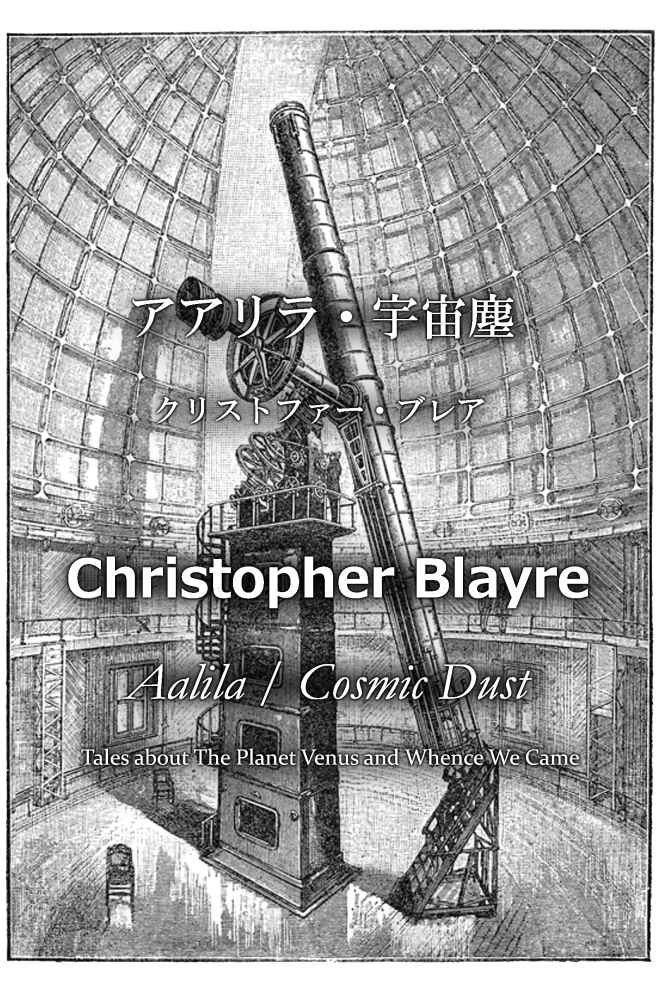
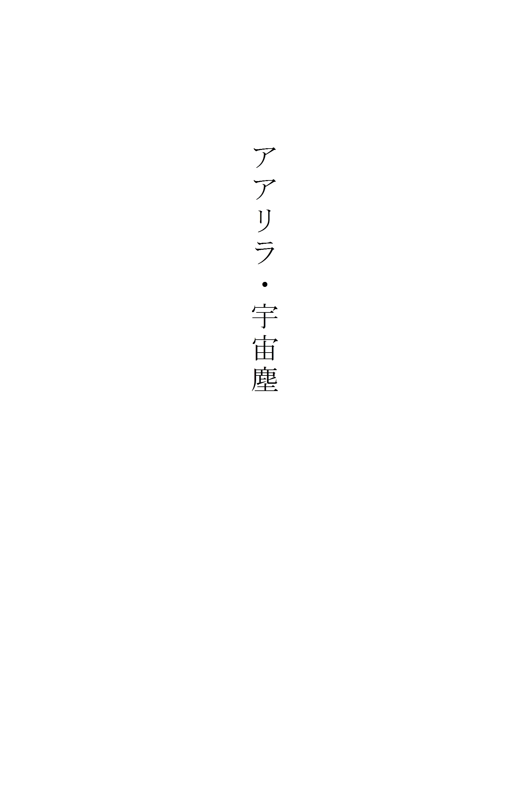
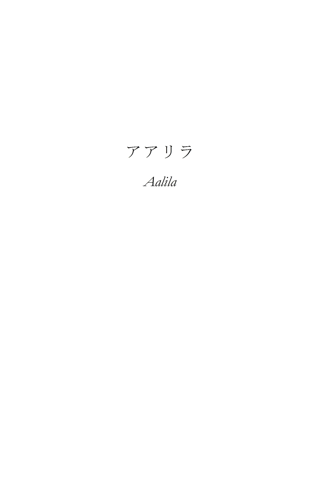
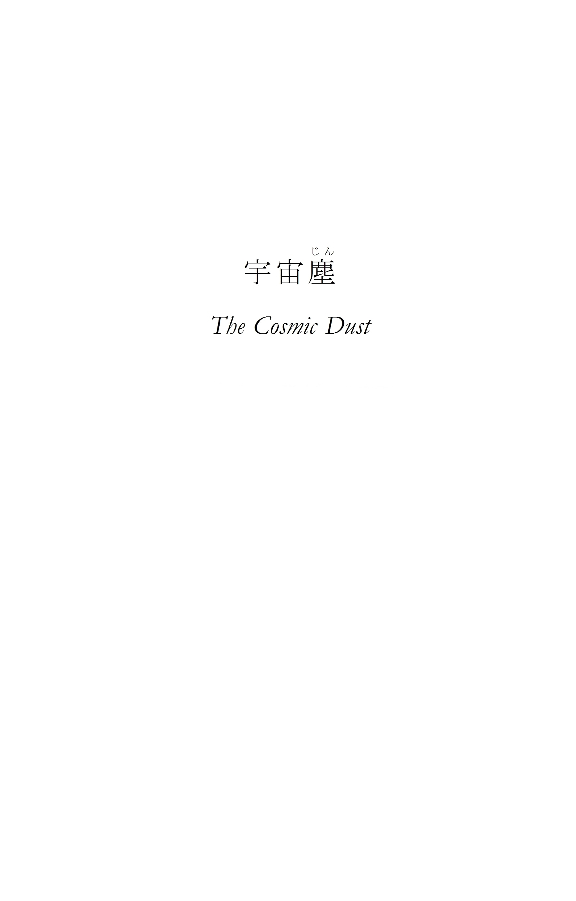
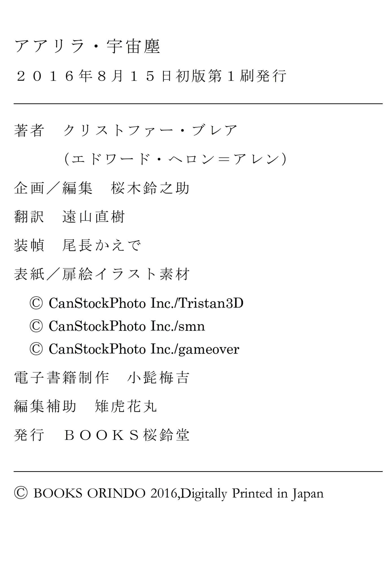

| アアリラ・宇宙塵 | |
| クリストファー・ブレア | |
| BOOKSORINDO (2016) | |

目次


･
『ネイチャー』にロマンスはない――少なくともあるべきではない。二重括弧 が付いていることからおわかりいただけるように、私が言っているのは母なる自然のことではなく、かの学術雑誌のことである。
〈言葉によらず〉とはロンドン王立協会が掲げる不変不動の標語であるが、これはすなわち、科学的事実を公表するならば、それを裏付け、立証する証拠（あるいは論文なり）を提示しなければならないという意味である。アアリラについてここに記すにあたって、この決まりを守ることは難しく、それどころか不可能なのだが、最善を尽くそうと思う。
『ネイチャー』には、好事家たちに科学分野におけるその週の新しい出来事を紹介する〈注目記事〉があるが、その――いや、かの素晴らしき雑誌の何年の何月号かは、好事家の方々にご自分で探していただいた方がいいだろう。というのも、私はフランスのポーにあるホテルで、ピレネー山脈の壮大な眺めを前に、その記事の切り抜きだけを手元にこれを書いているのだ。記事の内容は以下の通りである――
アラード・マークワンド教授が、本月十四日、パイピング・ペブワースに自身で所有する観測所にて急逝した。死因や死亡前後の状況は不明。検屍陪審は死因不明の評決を下している。遺体には奇妙な外傷があり、観測所の水銀灯に電力を送るための高出力の発電機のそばで発見されていることから、感電死の可能性が高いと思われる。
マークワンド教授は光線電話の研究開発で著名であり、事故現場となった観測所は超高出力の水銀灯装置を備えている。
この後に故人の詳細な経歴が続くが、これについてお知りになりたい読者は人名辞典を参照されたい。
マークワンドの死の真相を記録に残すか、それとも検屍陪審で下された〈死因不明〉の評決をこの件に関する唯一の（そして公式の）見解のままにしておこうか、私は頭を悩せてきた。場合によっては、私は不誠実で、観察者として信頼の置けない、科学者の風上にも置けない人物と――いや、もう狂人と言ってもいいだろう――思われてしまうかもしれないのだ。
いずれにせよ、この手記は私の生きている間は公表することはできない。そんなことをすれば、コスモポリ大学心理学教授としての私の地位は失墜してしまうだろう。私は自分のことを強く、腹の据わった人間だと思っているが、それでも木曜の午後に、王立協会の喫茶室に集まった同僚たちの和やかな輪の中に入っていくことを思うと尻込みしてしまうし、彼らの顔を見て、霧に包まれたオカルト的な――調査？ 実験？ 自己欺瞞？――呼び方は何であれ、あちらの世界 へと足を踏み入れ、しかも不幸なことに、その記録を公にしてしまった大科学者たちに、自分も仲間入りをしてしまったのだと思い知らされるのが怖かった。
と、くだくだと言い逃れを並べてきたが、しかし私は、この生涯でもっとも驚くべき、そして壮大なる体験を、どうしても記録に残さないわけにはいかないのである。
検屍陪審の報告書では、アラード・マークワンドの遺体について証言をしたのは私ということになっているようである。それによれば、私は事件当日の朝八時に観測所に入り（私はウォリックシャー州で彼と一ヶ月をともに過ごしていた）、前述の発電機にもたれかかった彼の遺体を発見したことになっている。これは事実ではない。私が彼をそこまで引きずっていったのだ。そうするしかなかった。何らかの説明を用意しておく必要があったから。彼が死んだ時 、私はそこにいたのだ 。
･
前述の『ネイチャー』の記事にあるように、マークワンドは光線電話の研究に熱心に取り組んでいた。一九一九年、王立協会の夜会に出席する栄誉に浴した者は、ランキン博士 ※１ が披露したこの驚嘆すべき音声伝達方法の公開実験を覚えておられるだろう。
会議室から読書室の奥まで、集まった客人たちの頭上に一本の光線が伸びており、読書室に用意された鏡の受光板には電話機が取り付けられていた。そして精妙なセレン光電池の装置を介して、会議室にいるランキン博士の助手が送声器に向かって話す言葉を読書室の電話で聞くことができ、そして一枚のカードで受光板に当たる光線を遮ると、通話が途絶えてしまう――これが実演されたこの日のことは、すべての出席者の記憶に残るだろう。私はひときわ美しい赤毛の娘が――いや、彼女はこの手記には関係ない。
マークワンドは私に実験の要領を説明してくれた。というか説明しようとしてくれていた（彼が自前の実験設備を持っていることは知っていた）。少年時代に始まってイートンとトリニティ校も同窓、そのままそろってコスモポリ大学の職員になっているほどの長い付き合いだから、彼のことはよく知っているので、実験について語る彼の熱中ぶりに私は一抹の不安を覚えた。
「ずいぶんと興味深いね」私は言った。
「興味深い！」と、マークワンドは、月明かりのナイアガラの滝を初めて見て、「あら――すッごいじゃない！」とのたもうたアメリカ娘にでも言うような口調で叫んだ。
「興味深いだって！ おいおい！ これはとんでもないことだぞ！ 怖ろしいくらいに！」
私は内心で少し首を傾げつつマークワンドを見やった。私にはそれほどのことには思えなかったのだ。彼の顔は灰色で、唇と手は小刻みに震えていた。彼が働き過ぎなのはわかっていた。私はひどく不安になった。彼はパイピング・ペブワースに小さな別荘と観測所を持っているので、これまでも私は、せっかくなのだからそこでのんびり羽を伸ばしてくるようにと勧めていた。彼は学期が終わったらすぐに、私も一緒に行くのならばという条件付きで、そうすると約束してくれていたのだった。
とりあえずその夜は早めに引き上げて、私はマークワンドを連れ帰った。その後、自宅でパイプを吸い、ウイスキーのソーダ割りを飲みながら、彼は告白めいたものを口にした。私には、彼が発狂とまではいかずとも、深刻な神経衰弱に陥る一歩手前の状態にあるように思えた。私は友人として、ここは一つ、あたかも激しい神経症に苦しむ患者を諭すように優しく、しかしきっちりと注意をしなければと思った。
「ほら、マークワンド」私は言った。「いったい何の話なんだい？ 神経を張り詰め過ぎなんだよ、君は。気をつけないとぷっつりいってしまうぞ。天文学者、そして数学者たるもの、誰よりも意識を平静に保たないと。僕らのモットーは何だったね？ 〈言葉によらずして〉だぞ。君が真剣そのものの顔をしているからまだいいけれど、そうでなければただのたわ言にしか聞こえないね」
「本当に真剣そのものなんだよ、僕は」マークワンドは静かな声で答えた。これこそ〈言葉によらずして〉なんだ。僕はたわ言なんか言っていない――ああ、知っている ということはなんという重荷なんだろう。僕が狂っているように思えるかい？ 確かに――早いこと誰かに話してしまなければ、本当に狂ってしまうだろうね。そして決めたんだ。君に話そうって」
「拝聴しようじゃないか」
「今はだめだ。くたくたなんだ。それにまだしなければならないこともあるしね。観測所に行ったら話すよ。とりあえず今のところは、なあ、考えてもみたまえ！ 光線電話の意味するところを理解しようとしてみてくれ――一条の光線がどれだけの情報を運ぶことができるか。無限に広がるエーテルの空間を横切って、何千年も前に消滅した惑星から今もまだ光が届いているんだ。想像してみたまえ、今この瞬間、僕たちを他の惑星とつないでいる光線を――火星と、木星と、金星と。そう、金星と！」そう言って彼はコップに手を伸ばし、私はその手が断続器よろしく小刻みに震えているのに気づいた。
「想像してみたまえ！ なあ、今まで考えたことはないかい？ 王立協会の広間の端から端で通話をするのと、ここから、そうたとえば金星と通話をするのは、程度の問題でしかないってことを。そうなんだ」
そこで彼は挑みかけるような目で私を見た。あたかも、信じられないならそう言ってみろとばかりに――まるで「続けてもいいかい？ 君を信じても大丈夫かい？ 聞く価値のある話だと思ってくれるかい？」と尋ねるかのように。
私はなんとも落ち着かない気分だった。こんな興奮した状態のまま彼を残して帰るのは嫌だったし、しかしその一方で、このまま話を続けさせるのも心配だった。私はすぐに心を決めた。
「確かに、怖いくらいに想像が広がる話だし――とんでもなくおもしろい話だとも思うけれど、でもこの時間に話すには壮大に過ぎるよ。僕はもう帰る。明日の昼食の時に会おう」
その日はそこで別れた。翌日、昼食を終えて休憩室で一服している時の彼は、前夜の興奮はきれいさっぱり消えていた。そればかりか、あまりにもいつものマークワンドなので、私は思い切ってこちらからランキン博士の実験の話を蒸し返してみたくらいだった。
「ああ、あれね。夜会向けの素敵な見せ物だったね。ランキンの助手が羨ましいよ。お上品なお方々のお上品なお耳に受声器を当てて、みなさんが驚いて嬉しそうにキャーキャー言うのを聞いていればいいんだからね。でもね」と、ここで真面目な口調になった。「あんなのはまだまだ序の口に過ぎないんだ。待っていてくれたまえ。パイピング・ペブワースで僕の実験を見せてあげるから。度肝を抜いてやるぞ！ ところで、何年か前に、電信で画像を――図面や絵を送る話があったのを覚えているかい？ 『デイリー・メール』紙の裏面にその図解の記事が載っていたよ。電信でやれるなら、無線じゃだめなのか？ 無線で遅れるなら、光では駄目なのか？ よく考えてみてくれたまえ。さあ、僕は戻らないと。授業があるんだ。じゃあまた」
そう言うと、マークワンドは機嫌良くひとつ頷いてみせ、悪戯 っぽい思わせぶりな表情を浮かべて去っていった。
私は大学の内外でたびたびマークワンドと顔を合わせてはいたものの、学期の終わりまでそれきりこの話は出てこなかった。やがて大学が夏休みに入ると、われわれはウォリックシャー州にある彼のこじんまりとして素敵な別荘に赴いた。そこには私設の観測所もあって、そこで彼は、生徒たちが科学の単位を取るのに必要な知識を授けるという職務になど煩わされることなく、自分の研究に取り組んでいた。
この手記を読んでおられる読者は、天文学者の観測所について必要な知識はすべてお持ちのことだろう。マークワンドの観測所も、基本的には他の観測所と変わるところはない。特筆すべき点は、極めて強力な水銀灯を備えていることで、これに電力を供給するための強力な発電機もある。この設備は光線電話の実験のために使われており、そして私は以前マークワンドが、『あんなのはまだ序の口だよ』と言ったのが、決してただの誇張ではなかったことをすぐに悟った。
この観測所から、四百メートルほど離れた別荘の書斎まで光線を飛ばすことができ、そこに据えつけられた受光鏡とセレン光電池を介すことで、まるで同じ部屋にいる相手と話しているかのように普通に通話をすることができた。光線経由で受声器側の呼び出しベルを鳴らすこともでき、同じく光線を使って、書かれた文字や図、さらには彼自身の肖像までも受像板に送ることができるのだ。物理には門外漢の私にとっては何とも気味の悪いことだったが、しかし心理学者としての私はマークワンドの気の昂ぶった状態に関心があったし、白状するならば、時には不安を感じもしていた。
マークワンドは素晴らしい実験やその成果を数多く見せてくれたが、自分が取り組んでいる研究については、私を立ち会わせてくれたことは一度もなかった。彼はよく笑ってこう言ったものだった。
「だって、君はあまりにも知りたがりだからね。そばであちこちいじり回されると、気が散ってしょうがないんだ。発電機で遊んだり、何かの拍子に電気の流れている電線に触ったりしないかって、こっちは気が気じゃない。小さな黒焦げの死体になった君を抱き上げるなんて、僕はごめんだからね」
そうして日々は過ぎていった。私は心からのんびりと羽を伸ばしていたが、しかしマークワンドの休暇中の調査研究がどのような内容のものであったにせよ、彼は明らかにそうではなかった。私が聞き出すことができたのは、金星に関連する何らかの現象を観測しているということだけだった。観測所から戻った彼は、取り乱さんばかりに興奮した状態の時もあれば、疲れ切った様子で、悄然と肩を落としている時もあったが、しかしいつも、いわばマントをまとうかのように、ぼんやりと内省に耽っているような雰囲気を漂わせているのは同じだった。
ある日のこと、まるまる二日の間いつにも増してぼんやりして、心ここにあらずで神経質だったかと思っていたマークワンドが、突然こんなことを言い出したので私は驚いた。
「このあいだ、発電器をいじくるとか何とか言って君をからかったのを覚えているかい？ ねえ、もしも僕の身にそういうことが起こるようなことがあったとしても、取り調べが行われれば君はどういう事情でそうなったかがわかるだろう。でもそういうことになる前に、そして部外者が――遺言執行人やら、その手のくだらない連中がやって来てあたりをほじくり返す前に、ほら、懐中時計の鎖に付いているこの鍵を持っていってほしいんだ。それでこの手帳ケースが開けられる。これを君の荷物と一緒に荷造りして、運び出してくれ。手帳の中身は後で読んでもいいが、僕が埋葬されるまでは待ってほしい」
私はひどくショックを受け、研究に打ち込むのもほどほどにして、何でもいいから力になれることがあるなら手伝わせてほしいと懇願したが、彼はただ奇妙な笑い声を上げてこう言っただけだった。
「僕はただ、極めて可能性の低い仮定の話をしているだけだよ。僕のことなら心配はいらない。でも、研究者というのは常に最悪の事態に備えていないとね。それから君の協力についてだけれど、僕の研究は純粋に個人的なものだから、誰の手助けもいらないんだ」
「それで、その研究はいつ公表するんだい？」
「しないよ」
「どうして？」
マークワンドはしばらく考えてからこう答えた。「僕は深入りしすぎてしまったんだ。世間はね、僕が知っていることを受け入れる準備はまだできていない。頭がおかしくなったなんて思わないでくれたまえ。僕は狂ってなんかいない。これ以上ないくらい正気だよ。いつか他の誰かが偶然同じ結果に辿り着くだろうけれど、その時にどうなるかなんて、神のみぞ知るさ。そこまで僕の責任にされたんじゃあんまりだ」
この時分には、マークワンドはどうやら自分に向かって話をしていて、私のことはすっかり忘れているようだった。ところで、まだお話ししていなかったと思うが、マークワンドは独身である。
私は二週間ほど一緒に過ごしていたが、マークワンドは日を追うごとに有頂天になっていった。有頂天とは馬鹿げた言葉だが、しかしそれ以外の表現を思いつかない。彼はまるで夢遊病者のように振る舞い、ありきたりな話題以外にはめったに口をきかず、私が大学の仕事の話をすると機嫌を損ねた。
「頼むから、仕事の話なんかやめてくれたまえ。そんなの平々凡々たる世界じゃないか。これはそんなのとは違うんだ。別世界？ それは言いすぎだけれど、でもそこに続く扉ではあるかもしれない」
嫌な予感がした。「別の世界に続く扉」うんぬんというのはうさん臭い霊能者やら、密教やら、薔薇十字団やらがよく使う文句なのだ。私はそれを聞いてぞっとした。
「なあ、マークワンド。僕が心の広い人間だというのは君も知っているだろう。幽霊の存在を信じて、『あちらの世界に行った』人と会話をする哀れなＡやら、ＢやらＣをせせら笑ったりもしないさ。そういうのを、僕は心の病気だと考えているんだ。心が弱っているところを、普段は掃除のおばさんをやっているような女が、降霊会でシーツをかぶって演技をしているだけのインチキ霊媒師につけ込まれてまんまと騙されてしまっただけだってね。ちょうど身体の病気にかかっている人が、いかさま医師のペテンにかかってしまうように。不治というのはああいういかさま連中の飯の種なんだよ。でも君がそういうのに関わりを持つなんてとても考えられない。扉っていったい何なんだい？ どこに続く扉だい？」私はいささか話をまとめきれないまま質問した。
「心配しなくていいよ。べつにうちのジマイマおばさんの神聖な眠りを乱そうなんてつもりはないから。さっき『扉』って言ったのは、文字通り、本物の扉のことだよ。階段とか鴨居とかと同じさ。うまい言葉がなかなか見つからないんだ。でも説明することはできない。すまないけれどね」
私はコスモポリ大学の医学教授であるジョージ・アンボワン卿に手紙で事の次第を打ち明け、一日か二日こちらに来てマークワンドを診てもらえないかと頼もうかと真剣に考えた。結局そうはしなかったが、今ではそれで良かったと思っている。
ある夜、私は書斎で本を読んだり煙草を吸ったりしながらマークワンドが戻ってくるのを待っていた。ふと目が覚めると、ちょうど夜が明けるところで、なんたることか、私はべろべろに酔っ払っていた。マークワンドは戻ってきていなかったので、私は彼の不興を買うのを承知で観測所まで歩いていった。東の空がちょうど赤く染まり始めていて、あたりの森は来る一日を前に目を覚ます鳥や獣たちのたてる小さな音で満ちていた。水銀灯が煌々と灯っているのが見え、発電機のぶうううんという振動音が聞こえた。
マークワンドはきっと眠っているのだろうと思った私は、入口の扉に手を伸ばし、そしてちょうど取っ手を回そうとしたその時、突然明かりが消えたかと思うと、扉の向こうからけたたましい叫び声が聞こえてきた――何かの単語？ 名前？ 驚きの声？――あれは何だったのか。
「アアリラ！ 」
「ア」の部分を長く伸ばして、
「アーアーリラ！ 」と。
私は扉を開けた。マークワンドは望遠鏡のそばで両手を頭上に掲げた格好で立ったまま、こちらを真っ直ぐに見つめた。夜明けはのろのろと遅く、あたりはまだ薄暗かったにもかかわらず、彼は真昼のフクロウさながら眩しそうに瞬きをした。しばらくの間ぽかんとこちらを見つめていたが、やがて恒星時時計に目をやると、
「おやおや」と、いたって落ち着いた声で言った。「本当にすまない。もう朝じゃないか。時間も、君のことも、何もかもすっかり忘れていたよ。まあ、無理もないけれどね。君も寝ていないのかい？ なんてこった。自分から招待しておいて、これじゃあんまりだね。さあ、ひと風呂浴びようじゃないか」
そうしてわれわれはまるで何ごともなかったかのように別荘に戻った。マークワンドは元気溌剌としていた。われわれは風呂に入り、コーヒーを淹 れ、ベーコンとジャガイモを炒めた朝食を食べて、小川に釣りをしに行った。
「根を詰めすぎだよ、マークワンド」私はかなり長い沈黙の後でそう言った。
「そうかい？」彼は笑いながら答え、釣り上げた鱒 を地面に下ろした。「そんな風に見えるかい？ 昨日は素晴らしい夜だったんだけどな。くたびれた科学者に見えるかな？」
確かに、そんな風には見えなかった。
それからわれわれは庭の木陰に椅子を並べてのんびりとくつろいだ。ふと気がつくと、作家ならば「風変わりな」と表現するような表情で、マークワンドがこちらを見つめていた。私は誘惑に抗いきれず、
「アアリラって何だい？」と尋ねた。
「ああ、もどかしい！」マークワンドは言った。「よし、もう決めた。話そう」
そして彼は唐突に話し始めた。私は彼の語った物語が細部にいたるまですべて事実であることを保証する。彼が省略したり、話さなかった部分については、彼の手帳をもとに補うことができた。
「去年、僕は満金星から新金星までを注意深く観測していた。詳細は観測日誌にすべて書いてあるから読むといい。専門的なことだけどね。今はそれを簡潔にまとめて話そう。残りはあの手帳に書いてある。どの手帳のことだかはわかるね。
ある夜のことだった。金星は半金星の状態で、椅子に横になって、望遠鏡を覗きながら記録をつけていたら、金星の影になっている側の、外周の近くで明るく光る部分が見えたんだ。もちろんそれが何なのかはわからなかったけれど、そのまま観察していると、それはちかちかと瞬いて消えた。
いいかい。もし君が笑ったり、ひと言でも言葉を挟んだりしたら、僕は貝みたいに黙り込むからね。それはね、なんと『Ｓ・Ｏ・Ｓ』だったんだ。トントントン、ツーツーツー、トントントン。モールス信号だよ。僕は自分が夢でも見ているのか、それとも目が疲れて見間違いでもしたのかと思った。
それはいったん消えて、やがてまた光った。それからたくさんの文字を発信してきた。まるでちんぷんかんぷんだったけれど、いいかい、誓ってもいいけれど、信号の一区切り一区切りは完璧なアルファベットを表していたんだ。
それが一時間ばかり続いて、僕は発信される文字を一つ一つ書き留めていった。大戦中に僕が連隊の信号手だったのは知っているね？ やがて信号はぱたりと止んだ。呪文みたいな文字の羅列になんとか意味を見出そうとしてみたけれど、もちろん意味なんかなくて、ただ最後の二文字は『Ｖ・Ｅ』だった。トントントンツー、トン。『Ｖｅｒｙ・Ｅｎｄ』。交信終了の意味だ。謎の信号手は――笑うんじゃないぞ――とにかく交信の終わらせ方は知っていたんだ。
次の夜、また同じことが繰り返された。僕はこれまで、『火星からの通信』について書かれたものを、くだらないと思いながらもたくさん読んできた。あの手の話はまるで雑草みたいにしぶとくて、次から次に出てくるんだ。でもね、その時の僕は、君が今ここに座っている事実と同じくらい確かなものだと確信していた。金星が地球に向けて通信をしているんだって。それも、狂ったわけのわからないモールス信号を使ってね。
その夜僕は、光の点滅が止まる前には必ず、決まり通りピリオドを表す、『Ａ・Ａ・Ａ』、トンツー、トンツー、トンツーが入っていることに気づいて、前の夜の記録を確かめてみたらやっぱりそうだった。どうだい！ あの時の僕の気持ちが想像できるかい？
それで僕はこうしたんだ。ここの水銀灯の反射鏡の向きを、望遠鏡を覗きながらできるだけ向こうの発信地点に近づけるように調整して、そして三日目の夜に向こうの通信が始まった途端（これまでの二回と同じく、『Ｓ・Ｏ・Ｓ』で始まったよ）、薄いブリキの板で光線を遮りながら、返信したんだ。
金星はしばらく沈黙して、やがて『Ｓ・Ｏ・Ｓ』を繰り返した。こちらも同じように返信した。それからまたしても、他の文字が次々に発信されて、僕はそれを一つ一つ、まるで宗教の儀式のように粛々と返信していった。こんなやりとりを一時間ばかり続けた後、今度は僕が送り手になって、『交信終了』と発信した。金星はそれを理解して、同じ信号を返してきて、それからまた『Ａ・Ａ・Ａ』。その夜はそれで終わった。
それからの数ヶ月間、金星が見える時に交わされたやりとりについては退屈だろうから省くよ。日誌にはみんな書いてある。また僕の側から送信して、アルファベットをＡからＺまで送信したら、向こうもそれを一文字ずつ送り返してきた。やがてとうとう、アルファベットがきちんと正しい順序で送られてくるようになった。金星は学習していたんだ。
そして、本当にすごいのはここからなんだ。どうしてそれまで思いつかなかったんだろう――セレン光電池に通電して、受声器をつないだんだ。すぐにザアザアと音が聞こえてきた。音声だったよ。舌音と唇音だ。『ム、マ、ム、ラ、ロ、ラ』。それから母音も。少なくとも、金星では光線電話が使われていて、僕たち地球人がそこまで辿り着いた時にはいつでも使えるように用意がしてあったことは確かだった。
しばらく交信を聞いた後、僕は『Ａ・Ａ・Ａ』と送信した。金星はそれが区切りではあるものの、『交信終了』――『Ｖ・Ｅ』――ではないことは理解していた。僕は今度は送声器をつないで、モールス信号で『Ａ』と送信してから、『エー』と音声を送ってみた。そしたら返信があった。信号と音声の両方で！ この要領で、アルファベットを全部やりとりした。
アルファベットの次に、僕は綴 りを教え始めた。綴 り字の教本を使って子供に教えるみたいにね。ＡＢ――ａｂ、ＢＯ――ｂｏ、といった具合に。しばらくすると（と言っても、わかっているとは思うけれど、何週間分の出来事をぐっと縮めて話しているんだからね）、僕たちの会話 （と呼んでいいのかわからないけれど）は、必ず『アアリラ』で始まって、『Ｖ・Ｅ』の後にまた必ず、『アアリラ』で終わっていた。
そうだ！ 僕はそれが金星の送信者の名前なんだと気づいた。ひとつ言っておくと、金星人、その相手は、僕なんかよりもはるかに優れた頭脳を持っていたよ。それ は僕に金星の発音を教えようとしたけれど、僕にはまったく理解できなくて、そうしている間に向こうは英語の単語を言えるようになっていたんだ。さらに、向こうの装置は僕の使っているものができることをすべて完璧にこなして、その上さらに進んでいるんだ。
何日もの間、僕は光線通信で画像をやりとりしようとしてみたんだけれど、少なくとも一週間は何の結果も出なかった。やがてある夜、『アアリラ』と音声を送信して、次にその文字を、もちろんモールス信号だけれど、水銀灯の点滅の代わりに送画板に『・』と『―』を描いて送ってみた。
これを受けて向こうがどうしたのか、僕は後になって知ったんだけれど、その時はこちら側の受像板は引っ掻き傷だらけでめちゃくちゃになった。つまりね、アアリラはこちらの意図を理解して、彼女 なりに（なぜかしら、僕は相手が女性だと確信していた）精一杯同じものを描こうとしたんだ。それから何週間も辛抱強く練習を続けた後、ついにある夜、アアリラの肖像が送られてきた。ああ、その美しいことといったら！ 想像してみてくれ――いや、そんなことをして何になる？ だって彼女のその肖像は――彼女 は――とても言葉では言い表せないんだ！」
マークワンドは口をつぐみ、これまでも私を幾度となく困惑させてきたあの奇妙なうっとりとした様子で目を逸らした。
「彼女？」私はそっと尋ねた。さっき警告されたように、彼が黙り込んでしまうのではないかと心配だったのだ。
「ああ」
「だから、彼女の絵のことだろう？」
「僕はね、本人に会っているんだよ」
ここで私が面食らった、というのはなんとも情けないほどに貧しい表現である。これはいったい何の話なのだろう？ 私は狂人と話をしているのだろうか。しかしもしこれが妄想なのだとしたら、もちろんそうに決まっているが、これほど合理的で、これほどまで緻密に練り込まれた妄想など聞いたことがなかった。
その日マークワンドが話してくれたのはそこまでだった。彼としては、この驚くべき秘密の触りの部分だけを披露して、自分の話を私の頭にじっくりと浸透させておいてから、私の態度から私がその話をどう受け取ったか、そして私がそれ以上の秘密を打ち明けてもいい人物かどうかを判断するつもりだったのだろうと思う。
しかし、いくらかなりとも胸の内を明かすことができたことで、彼は見るからにずいぶんと気が楽になったようだった。彼は話のところどころにちょっとした罠を仕掛けておいて、私が笑ったり、疑わしそうにしたり、小馬鹿にするような態度を見せたりしないかを試したが、話が進むにつれて、私はいつも関心のあるような振りをする必要がないほどに興味津々で聞いていたから、やがて彼は自らの驚くべき体験について、少しずつ詳しい話をするようになった。そして前述したように、当時彼が省略した部分については、私はこの事件について書かれた彼の手帳を読んで補足した――後になって のことだが。
いったいどのようにして、マークワンドとアアリラが言葉の意味を確立し、理解不能な混沌とした音の羅列の中から会話を成立させていったのか、生理学の用語を借りて言うならば、二つの言語文化が次第に「吻合 」していく課程をここで記すとなると、相当な厚さの本が一冊埋まってしまうほどに長くなってしまうだろう。
結果だけを書くならば（不十分ではあるが、これで良しとしよう）、マークワンドは少しずつ、アアリラのことや、惑星金星での生活（向こうの物理化学は、ジュール・ヴェルヌの想像力を最大限に引き出しても遠く及ばないほど進んでいるのだという）について、あらゆることを学んでいった。
何よりも重要なのは、マークワンドが、この年齢になって初めて運命の人に出会った独身者にしか持ち得ぬ一途さでアアリラに恋をしていたという衝撃的な事実である。私がここまでこのたいそう重要な点について触れていなかったことに、お気づきいただけるだろう。
金星にいるアアリラが、いったいどうやってこの地球のモールス信号を学習したのかと不思議に思われる方もおられるだろうが、これは当然の疑問である。こちらが質問をしても、マークワンドが「貝のように」黙ってしまうことはないと感じられるようになると、私はすぐにこの点を問い質してみた。
「ああ。それか」マークワンドは答えた。「当然話しておかなくちゃならないことだった。彼女はね、大戦中に艦隊の信号手のやりとりを見て学んだんだよ」
「何だって？」
「ちょっと信じられない話だろう？ 惑星間通信は、向こう ではずっと以前から盛んに研究されていたんだ。すでに他のたくさんの惑星に信号を送ってはいたけれど、外からの通信を拾った ことは一度もなかった。ところで、地球は金星の言葉で〈ワルマ〉っていうんだよ。意外ではないかもしれないけれど、アアリラは向こうではかなりの熱狂的な天文学者でね。何かの徴候を探してもう何年も〈ワルマ〉上を観察していたんだ。
一九一四年八月以降、彼女は地球の海に、まるで星のようにちかちかと光が点滅しているのに気づいた――もちろん、向こうの望遠鏡は、こっちのが玩具の鉄砲だとしたら、大砲みたいなものなんだ。そして彼女は何ヶ月も頭をひねった挙げ句、その点滅に一定の法則があることに気づいた。短い光と長い光の組み合わせがたびたび繰り返されて、とりわけ『呼びかけ』のための『Ｅ』が連続して、その近くで一度だけの『Ｅ』が光るとそれが止むことに気づいた。その調子でピリオドの『Ａ・Ａ・Ａ』と、『交信終了』の『Ｖ・Ｅ』はほとんどすぐにわかった。そしてここから、少しずつすべてのアルファベットを解読していったんだ。もちろん順番はでたらめだけどね。僕らが会話ができるようになって彼女が最初にした質問の中に、『Ｔ』と『Ｅ』は何なのかというのがあった――ＴとＥは、英語で一番頻繁に使われる文字さ。『ａｎｄ、ｔｈｅ、ｉｔ』なんかの一般的な単語はすでにたくさん知っていたよ」
「それで、彼女はそれを何だと思っていたんだい？」
「何って、彼女にとっては推測される答えは一つしかなかったわけだよ――僕ら が金星に向けて信号を送っていると！」
「ああ！」
「彼女が一番首を傾げたのは、陸地で頻繁に、繰り返し現れる〈Ｅ〉、短い光点だった。大砲の砲火だったのさ」
頭がくらくらしそうな話だった。それから後は、私はめったに質問を挟むことはなくなった。
さて、ここから私にとってはひどく書きづらい内容になってくる。私はマークワンドの死にひどいショックを受けていた。その死が意味し、そしてこの私に、あたかも恐るべき証拠のように伝えてきたこと、それはすなわち、この驚異の体験が妄想などではなく、それが避けることのできない、悲劇的な結末に向かっていたことであり、そしてそうであるがゆえに、私には誰かがこの詳細を読んでほんのわずかに口元を緩めることを考えるだけでも冷静ではいられない。なぜならこれから先の内容が容易に冗談扱いされてしまう性質のものであるからだが、しかしそのような内容そのものが、まさにこの悲劇の本質でもあるのだ。
まず知っておいていただきたいのは、アアリラには、金星の風習にならって、七人の夫がいたという事実である――とはいえこの事実があっても、彼女はマークワンドの情熱に精一杯応えることに何ら抵抗を感じなかったようである。金星の夫たちというのは、知能の劣るわれわれ地球人からするならばたいそうのんびりした性格のようだが、しかし時には例外もあるもので、その例外的な夫の一人が、アアリラのこの宇宙事業に、怒れる嫉妬深い夫という形で大きな影を落としていた。
極めて知能が高く、金星の科学界において高い地位を占めるアアリラをこの地球の大学の名教授だとするなら、イッルーハという名前のこの夫は、その無教養な妻（もちろん一人だけだが）のようなものだった――夫がその一生を捧げた仕事よりも、自分の感情や満足感の方にはるかに重きを置くような妻である。
かくしてマークワンドと「逢い引き」をするにあたって、アアリラはひどく慎重にならざるを得なかった。地球では、そのような彼女の振る舞いを「ふしだら」と評する向きもあるかもしれない。ともあれ、アアリラにとっては、観測所に閉じこもって地球の愛人と交信することは何ら問題ないことだった。
しかしながら、夫のイッルーハの方は、もちろん金星の宇宙物理学の膨大な可能性について無知ではないので、アアリラの研究がどのくらいの範囲を、どの程度調べるものなのか、なかなか心穏やかというわけにはいかず――とにかく前述したように、アアリラはひどく慎重にならなければならなかったのだった。
夜毎の逢い引きが理不尽なほどにねちねちと小言を言われて邪魔されるのはしょっちゅうで、力尽くで妨害されるのは言うに及ばず、そういう時にはアアリラも怖ろしくてしばらく光線電話機に近づかなかった。マークワンドの手記を読んだところでは、どうやら彼女は油断をした隙にイッルーハにマークワンドの光線写真を何枚か見られてしまったことがあったようで、いくぶん品のない言い方をするならば、イッルーハは妻をつけ回していたのである。
しかしながら、アアリラの科学に対する極めて高度な知識、才能、そして野心がなければ、すべてはうまくいっていたのかもしれない。自身を描いた巧みな（破廉恥と言わざるを得ないものも少なくない）画像を送信することに留まらず、彼女の野心はそこから大きく飛躍し、そのために多大な労力を研究に費やして、とうとう、なんと自分自身 を送信することに成功したのである。正確には自らの複製、体内の器官にいたるまで完璧に再現され、しかも身体機能、密度ともに現実の肉体とまったく変わらない分身を。
アアリラの科学者としての業績の頂点とも言えるこの技術の開発とその最終的な成功について、私には大まかな内容しかわからない。というのも、マークワンド自身、この部分の記述は言葉数が少なくなっており、彼の日誌はこれ以降、生真面目で高潔な配慮によって、多くはないにせよいくつかの部分が省かれて読者の想像に委ねられ、それゆえに科学的な資料としての価値はそこなわれる傾向にある。
この実体でもなければおぼろな幽体でもないアアリラの分身は、機会があるたびに地球にやって来てマークワンドの観測所を訪れ、一方で彼女の実体は金星の観測所に残って、言わば見張り番をしていたのだった。アアリラの名誉のために断っておかなければならないが、彼女はマークワンドに、こうした惑星間の外出が途方もなく、怖ろしいほどに危険であることを隠そうとはしなかった。アアリラの実体は金星に残っているとはいえども、意識は分身と一緒に地球にやって来ていたからで、そしてこれこそは、あの運命の日、アアリラとマークワンドに悲劇をもたらすことになるのだった。
というのも、金星にある実体は、それを司る意識を一時的に欠いているために装置の操作には向いていないからで、マークワンドとのせっかくの二人きりの時間も、常に投射板に目をやり、光線電話機に耳を当てて警戒していなければならないのでは台無しだったに違いない。
結果的に、こうした驚くべき惑星間の逢い引きは、イッルーハが留守にしているか、少なくとも観測所に邪魔をしに来る可能性の低い時を狙うしかなかった。どうやら金星の夫というのは――もちろん、その数の多さは別にして――、地球のいわゆる文明国の妻たちにそっくりのようである。そしておそらく、その逆もまたしかり、なのだろう。
マークワンドは、前述したように、私との会話の中ではアアリラとの密会の内容についてはあまり話したがらず、そればかりか、観測所の日誌の記録には金星の政治、経済、そして時には民俗学的な詳細ばかりが書かれており、ざっと目を通してみた感じでは、二人で過ごす時間は文化の違いによる差を埋めることに大きな時間が割かれていたと言っていいだろう。というのも、アアリラと長い時間二人きりで過ごしていながら、手帳にも日誌にもほんの数行の書き込みしかないことがしばしばあるのである。
マークワンドは二人が冒していた危険がどのようなものかを説明しようとしてはくれたのだが、しかしその説明というのもまったく私の理解を超えていて、ヘルツ波、電位、アンペア数などなど、他にもたくさんの専門用語が頻出し、私は匙を投げてしまった。
私にわかったのは、金星にいる実体のアアリラが投射装置を操作しており、そしてもしも邪魔が入ったり、あるいは機械が損傷したりすれば、取り返しのつかない大惨事になるということだけだった。もしも地球との交信中に部外者、あるいは未経験者が観測所に入った場合、アアリラの発電施設の全電力が、金星と地球間をつなぐ光線に流れてしまう怖れがあり、そうなる可能性が高いのは明らかだった。そうなった場合に何が起こるのかについて、マークワンドはこう言っていた。「推測したくもないね」と。
「実体のアアリラは、まず間違いなく死ぬだろうね。ここがどうなってしまうのかは、予測するのは難しい。何らかの形で瞬時に消滅――いや、蒸発かな......どうだろう。でも、僕たちは必要な安全策は思いつく限りすべて講じているよ」
私は思いきって一つ質問をした。
「分身の方のアアリラの身体は、物理的な痛みを感じることができるのかい？」
マークワンドはしばし考え込み――私は彼の顔が少し赤くなっているような気がした。やがて彼はこう答えた。
「ああ、感じられるよ。それについてはほとんど疑いの余地はない」
「もう一つ」私は言った。「もし仮に、誰か部外者が（われわれはイッルーハの名前を出すことはめったに、いや一度もなく、これはもちろん本人への配慮のためである）生身のアアリラのいない隙に装置をいじって、そして旦那――いや、その誰かが（私は慌てて言い直した）どうにかして自分自身を投射してしまったら？ そうしたらどうなる？」
マークワンドは、残念ながら、肩をすくめて笑った。そう、彼は確かに笑って、返事をする代わりに顔を背け、小声で古い農園歌を口ずさんだのだった。「会衆みなみな立ち上がり、歌いませえや――ハーレルーヤ！」
マークワンドとの滞在期間は終わりに近づいていたが、それでも私は漠然とした不安につきまとわれてぐずぐずと長居をしていた。お目付役を気取るつもりはまったくないけれども、彼をアアリラと二人きりにして去るのは安全ではないと、いや健全ではないと思ったのだ。
一緒にどこかを訪れようかと遠回しに誘ってもみた。彼が無事にロンドンに帰り着くのを見届けたかったからだが、彼は聞く耳を持たなかった。マークワンドは恋煩いだった。そしてとても幸せそうだった。私はだんだん不安になり、そして白状するならば、だんだんと好奇心を膨らませていった。
私は二人が出会う場面に自分も同席させてほしいという思いを何とかして伝えようとしたが、すると今度はマークワンドの方が動揺していた。私は自分がこの上ないほど品のない、軽率な発言をしてしまったことをすぐに察し、あとは何か緊急事態が起こり、私が役に立てるような機会が巡ってくるのを待つしかなかった。
そうして問題の十四日の夜、あるいは早朝がやって来た。それに先立つ数日の間、マークワンドはぼんやりとして神経質で、事態は思うようにうまくいっていないようだった。ひと言で言えば、イッルーハに手こずらされていたわけで、金星側の観測所と交信を保ちつつ、二人からするならば、関係が始まって以来一緒に過ごした時間の大半を占めていたのだろう調査や学術的な会話を続けることに、かなり心労がたまっているようだった。
マークワンドは言っていた。「確かに、向こうで何が起こっているのかにそれなりに意識を集中させておくのが、なかなか難しい時もあってね。ついこの間なんか――」
ここで言葉は途切れ、結局私はその時、二人の歩む科学研究の花道を阻んだのは何だったのか知ることはなく、これについてはマークワンドの手帳にも何の記録も残っていなかった。
私は例によってマークワンドの書斎で彼が戻ってくるのを待っていた。私は彼が観測所から戻ってきて、アアリラが無事に「家」に送り返されたのを確認するまではベッドに入るのが嫌だったのだが、しかしその時もまた例によって、いつの間にか眠ってしまっていた。
突然、観測所の水銀灯が書斎に向けられ、光線電話機の呼び鈴がけたたましく鳴り響いた。私は受声器をひったくるようにして取り上げたが、聞こえてくるのはごちゃごちゃと入り交じった物音と、無線送信機のような激しいばりばりという雑音だけだった。受声器を放り出すと、私は観測所に走り、扉を大きく開け放って中に入った。室内は水銀灯とは別の、眩いすみれ色の光と、何かの焼ける臭いで満たされていた。
私が入ってきた時、マークワンドはそこに立っていた。そして神経が張り詰めていたせいで自分が幻を見ていたのかどうか、今となってはもうわからないが、しかしその時私は、女性の姿を見た――そう、それも息を呑むほどに美しい女性が、マークワンドの足もとの床にひざまずいて、片方の腕を彼の腰に回し、顔を光線電話装置を構成している複雑に入り組んだ鏡やセレン光電池の方に向けているのを。
美しく、色の黒いその顔には恐怖の色が浮かんでおり、そして彼女は、マークワンドの盾になろうと、私には見えない何かから彼を守ろうとしているかのようだった。
しかし、その光景が見えたのもほんの一、二秒のことだった。その時、地震のような大異変が起こった。明かりはひとつ残らず消え、観測所は鼻をつままれてもわからないほど真っ暗になった。その暗闇の中、床の上に、発光性の、といってもぼんやりとした光ではなく、きらきらと火花のような輝きを放つ直径一メートルほどの輪が浮かび上がっていた。
私は照明のスイッチを手探りした。明かりは点かなかったが、死ぬまで忘れることのないほどの凄まじい衝撃に打たれ、それがもとで激しい吐き気を感じた。しばらくして（私には何年にも思えるような長さだったが）、私はマッチを取り出して擦り、停電になった時に備えていつも机の上に立ててある二本の蝋燭 に火を移した。
光線電話装置は大破し、その光景はまるで、海運倉庫の裏に捨てられたバネ式マットレスの残骸のようだった。望遠鏡は頑丈な土台からねじれて外れ、床すれすれまで垂れ下がっている。ドームの縦長の開口部の横に割れ目があった。
不気味な沈黙をひしひしと感じ、ふと見ると恒星時時計と太陽追尾機が両方とも止まっていた――その単調で朗々たる機械音は、どれほど慰めになってくれていただろう。
私はマークワンドと二人きりだった。
彼は先ほど立っていた場所に横たわっていた。ぴくりとも動かないその姿はいたって普通だった。唇を上下の歯が見えるほどにぐっと左右に引いた、おぞましい笑顔を浮かべていることを除いては。
電気ショック、人工呼吸など、私は応急処置の授業で学んだことを思い出した。彼のチョッキのボタンを外し、ズボンのベルトを緩め、シャツの襟をくつろげると、私は見よう見まねで処置を始めた。少しずつ服を脱がしていくにつれて、胸の悪くなるような臭いがした。やがて私は彼が死んでいることを悟った。
必死の思いで意識を、正気を失わないようにと努力しながら、懸命に頭を働かせた。医師たち、検屍審問、野次馬の詮索、遺体の検分。おぞましい！ 何としてでも、彼の身体を調べるのは私が 最初 でな くて はな らない ような気がした。
私はマークワンドの服をそっと丁寧に脱がしていった。死の直後に血の気が引いたせいで、もともと白い肌がさらに白くなっていたが、少なくとも外傷はなかった。
しかしながら、アアリラが腕を回していた腰の部分に、帯状に濃い茶色の火膨れができていた。まるで炎の糸を巻きつけられたかのようで、しかもその炎は皮膚を通り抜けて身体の奥深くまでを焼きながら、それでいて衣服には焦げた跡すらなかった。
気がついた点が一つ。腰の背骨のあたりに、小さな右手の形をした火傷の跡があり、指先の部分が特に度合いがひどかった。「もう一方の手はどこにあったのだろう」。私にはそれしか考えられなかった。
私は座ったままじっとマークワンドを見つめていた。どのくらいそうしていたのだろうか、ドームの割れ目からふと夜明けの光が見えた。私は慎重に彼に服を着せていった。死体に服を着せるというのがどれほど難しいかおわかりいただけるだろうか。遺体は硬直しつつあった。
私は精一杯頭を働かせた。マークワンドはどのようにして死んだのか。新聞、死亡告知、検屍官。そうだ――発電機だ！ 私はマークワンドをそちらに引きずっていった。見たところ発電機も同じように壊れているようだった。彼の強張った腕を無理やり上げさせて、その手を整流器の上にのせた。それから懐中時計の鎖についていたあの鍵を外した。
今しがた暗闇にきらきらと輝く輪が見えたところには、灰白色の粉が円を描くように積もっていた。ふと思いついて、私は研究室の作業台から、コルク栓のついた、ありふれた収集用の小さな試験管を取り上げると、その粉を中に入れ、管をチョッキのポケットに入れた。
それから殺人者よろしくこっそりと書斎に戻ると、マークワンドの手帳ケースを探し出して私の旅行鞄に入れた。
そして、使用人たちを起こした。

･
キプリング氏 ※２ はその昔、報道の世界で「特ダネ」と呼ばれる事件に遭遇した記者たちの驚くべき物語を書いている。彼らは海の怪物を目撃したのである。その出来事について、それぞれの見識と性向に見合った記事を書いたものの、事実として公表するにはあまりにも常軌を逸していると判断した彼らは、話し合いの末に事実を伏せ、何も書かないことにする。
私も同じ立場にあったのだが、しかし、長い時を経て、やはりこれは記録として残しておかなければならないと考えるにいたった。私がこれからここに記すことが、散逸し、忘れられた記録文書たちの中から救い出され、未来を予測したものとして生き返る時がいつか来るかもしれない――ロジャー・ベーコンやレオナルド・ダ・ヴィンチの、飛行機の発明の原型のように。
メトロポリ大学の（現職ではなく前任の）心理学教授チャーマーズの残した、アラード・マークワンドの死、そして彼とアアリラとの交流についての手記を覚えている者の中には、まだ存命で大学に残っている者もあるだろう。私がここに記す出来事は、あの事件の後日談でもある。チャーマーズの手記には、彼が一瞬アアリラの姿を目撃した場所にきらきらと輝く埃のようなものが残っていたこと、そして彼が少量のその物質を標本として試験管に採取し、ポケットに入れて持ち去ったことが、何気なく書かれている。
この標本を保存しようとした科学者としての本能が、チャーマーズの死の――怖ろしい死の原因となった。あの事件からまもなく、彼は右胸に痛みを伴う火膨れができていることに気づいた。通常の処置ではなかなか治らず、患部も広く、深くなっていったので――実は蚕食 性の皮膚潰瘍 だったのだが――、彼は友人のアンボワン勅任医学教授に相談した。
アンボワン教授はその症状を非常に深刻にとらえた。
「確認したいのだが、本当にラジウムの放射線を直接浴びたりしなかったかね」
「いいえ。そんな覚えはありません」チャーマーズは答えた。「なぜです？」
「私の診たところでは、これはラジウム被爆が原因となって起こるものなのだよ」
チャーマーズにも、この発言がどれほど深刻なものかは理解できた。
「では、この患部とその周辺の皮膚が粉のようになってぽろぽろと剥がれるのは、先生のお考えでは――」彼はそこで言い淀んだ。
「ああ――残念だが」アンボワン教授は答えた。
ラジウム発見の初期の歴史には、この怖ろしい元素が見つかったばかりで、それから身を守る方法やその重要性が理解される前に、その身を犠牲にして科学に貢献した犠牲者たち、いわば科学の殉教者たちの名前がたびたび登場する。ロンドンの王立外科医師会博物館を訪れる者は、あの不治の病魔――剥離 性皮膚炎――皮膚の細胞が徐々に剥がれていき、長引く苦しみの末に確実に死に至る、またの名を紅皮症として知られる病の進行過程と結果を克明に説明する展示物を見て、そのあまりの凄惨さに愕然とするであろう。
チャーマーズは勇敢な男だったが、アンボワン教授の診断はこの世でもっとも勇敢な男ですらも震え上がらせるようなものだった。それは死の宣告だったのだ。
数週間後、病魔が猛威を振るう頃になってようやく、チャーマーズはきらきらと輝く粉末を入れた試験管をチョッキの右胸のポケットに入れたままロンドンに戻り、私的な日誌や書類などを保管している収納庫に、マークワンドの他の遺品と一緒に入れたことを突然思い出した。
私がこの物語に登場するのはここからである。というのも、チャーマーズは私にその試験管を送ってきて、その中身についての意見を聞かせてほしいと頼んできたのだ。
当時、私はコスモポリ大学の古典力学の教授に就任したばかりで、本音を言うならばまだ右も左もわからない状態で、同僚や生徒たちとどういう風に接していいか悩んでいたところだった。だからアンボワン教授がこの何の変哲もない 試験管と、瀕死のチャーマーズの伝言を携えて私のところにやって来て、どうかよろしく頼むと彼自身からも頭を下げられた時には、正直な話、頼りにしてもらえて嬉しかった。
とあるどんよりとした十二月の短い午後、問題の試験管は茶葉の荷箱の内側に貼ってある鉛箔で覆われた状態で持ち込まれた。教授は状況を手短に説明し（マークワンド教授の死については触れなかった）、その後われわれは試験管を暗い研究室の中に持ち込み、そこで包みを開いた。おびただしい発光現象が起こった。特大のスピンサリスコープ ※３ を覗いているところを想像していただきたい。私は慌てて管を包み直し、微量の臭化ラジウムを保存している研究室の保管庫に入れて、教授とともに私の執務室に戻った。
「この怖ろしいもの は、いつからあったのです？ そしてどこに保管されていたのです？」私は尋ねた。
「チャーマーズが何ヶ月も持っていたんだ。手帳ケースに入れたまま、地下室の金庫に保管していたそうだ。しかし二日間、そのままの状態でチョッキのポケットに入れて持ち歩いていた」
「そんな......！ ではチャーマーズは......」
「助からんよ――蚕食 性皮膚潰瘍 、剥離 性皮膚炎だ」
こうしてメトロポリ大学の化学研究室は、世界で最大にしてもっとも純度の高いラジウム元素の標本を所有することになったのだった。
五十パーセントもの純ラジウムを含むこの粉塵が、アアリラの衣服からマークワンドの観測所の床に輪の形に落ち、そこで発光していたのか、それともアアリラとは関係なく、何年にもわたって放射圧によって飛ばされてきたものが堆積していたのかはまだ不明のままだった。これについては後述する。少なくとも、ここではそれに続く数ヶ月の間に起こった出来事を整理させていただきたい――とはいえども、冒頭で紹介した新聞記者たち、そしてこの手記に登場する私の同僚たちと同様に、私には決してこの記録を公表することはできない。私にできることといえば、研究所の日誌に記された事実を書き写し、それを後世の研究者たちのために残しておくことだけである。
ラジウム被爆から身を守るための考え得るありとあらゆる既知の（さらにはまったく新しい）手段を講じて、われわれは純粋なラジウム元素を分離させ、すると三立方センチメートルほどの、灰白色の粉末状の物質が残された。私はこれを四つに分け、そのうちの一つを植物学の教授に、一つを動物学の教授に渡し、一つは私が持ち、そして残りの四分の一は化学研究室の保管庫に保存してある。私の後継者たちが、もしもそうすることが適切だと考えるのであれば、私たちの実験を再現することができるように。
その物質には、ありとあらゆる既知の化学分析が一切通用しなかった。その大部分が有機物であることはかろうじてわかった――しかしそれも、おそらくは微量の鉄と鉱物のカンラン石が混じっている以外は、無機物が含まれていないことから消去法で判断したにすぎない。しかし私の同僚たちの実験は別の結果が出て、そして私は、今もなお、それを書き記すことに躊躇 いを禁じ得ないのである。
植物学教授ウォラムと動物学教授カントレルの実験は共同で、平行して行われた。実験方法は定石通りのもので、それに経験を頼りに試験的な過程を加えた。実験の詳細については、彼らが記録を保存しているに違いないので、ここではその結果だけを取り上げる。六ヶ月ほど経った頃、私は植物学部の研究室に呼ばれ、するとそこには、とても大学教授とは思えないほどの興奮状態の二人がいた。問題の粉末状の物質は通常の大気と気温の条件下では何の実験結果も得られず、最後に摂氏百度――つまり弱塩性の沸騰水での培養を試みた。二人はとりわけ百度という温度を重要視した。
「どうしてだい？」
二人は互いに目を見合わせ、それから一方が――どちらだったかは忘れてしまったが――ぎこちなく笑って言った。
「地殻が固まったばかりの頃の地球の気温が、百度くらいだったらしいんだ」
私は愕然とした。今の答えは、無限の推論の端緒となりそうに思えたのだ。私はたどたどしい口調で言った。
「しかし――カンブリア紀とか......無生代は？」
「無生代？」カントレルは答えた。「君が言いたいのは先カンブリア時代の、原生代や始生代のことだね。最古の堆積岩に生物が確認できることに疑問の余地はないんだ――もしかしたら、もっと以前にも」
「覚悟したまえ」私が気を取り直すのを見て、ウォラムが言った。「これから君にとても信じられないようなものを見せよう。あまりに不可解なものだから、すぐさま頭が唯一考え得る説明に飛びつこうとするほどのね――しかし、その唯一の説明は絶対にあり得ないんだ」
「なんだか複雑だな」
「そう――まさに複雑怪奇だよ。ミルトンですら夢にも思わないほどのね。この圧力室で、君から渡されたあの粉末状の物質の培養実験を今も進めているところなんだ。ほら、ここに顕微鏡用のスライド標本がいくつかある――溶液に浸してあるのが、原生動物、藻類、苔類、微生物――溶液なしのスライドは極小の貝類だ――弁鰓 類の赤ちゃんだよ」
「それで、これはどこから出てきたんだい？」私はおそるおそる尋ねた。
「君から渡されたあの物質からだよ」
「じゃあ、君たちの考えでは――」
「僕たちは何も考えていないよ。あえて考えない。ほら、ここに小さな標本がある――名前は......口にしたくない。知ってはいるがね」
二人はさらにいくつかの標本を見せてくれた。私はウォラムに尋ねた。
「何なんだい、これらは？」
「ここにあるのはね、現在は地球上に存在しない生物なんだ――この沸騰する水槽の中を除いてはね」
私は頭がくらくらした。「次はどうするつもりなんだい？」
カントレルが答えた。
「ピーターソン教授に加わってもらおう。地質学と古生物学の専門だ」
われわれは翌日に彼との約束を取り付けた。
尊敬すべき同僚であるピーターソン教授は、当時――あるいは時代に関係なく、科学界でもっとも著名な人物の一人だった。そしてまた、人間の本質を学ぶ者にとっては、高名な科学者にして鼻持ちならない自惚 れ屋という、ほとんど聞いたことのないような組み合わせの一例でもあった。教授になったばかりの頃からして、（形而上学寄りの）宇宙進化論者たちに、全能の神は始めにピーターソン教授を創ったのだと、そしてその一大事業を終えてしばらく休んだ後に、少なくともある程度においては、ピーターソン教授が住むのにふさわしい場所としてこの世界を創造したのだと言わしめたくらいだった。しかも当の教授は、全能の神の二番目の仕事をそれほど評価していないらしいことは、急いで付け加えておかなくてはならないだろう。とにかく、相手に嫌悪感の混ざらないでもない、健全なる恐怖と敬意を抱かせる人物なのである。
約束通り植物学部の実験室にやって来たピーターソン教授は、自分に割くことのできる時間はせいぜい二十分が限度だと説明した。結局二時間留まることになったが、その最後の方には見るからに苛々していた。その学者人生において初めて、彼は嫌味たっぷりの、権柄尽くの言葉で同僚たちをやり込めることができなかったのだ。
「いくらなんでも、君たちはくだらない冗談で私をかつごう としているのではないだろうと思うが、しかしもしそうだとしたら、正直に認めよう、これがどういうからくりなのか、私にはさっぱりわからん。ここにいる生物は、マークワンドの観測所で発見された数立方センチメートルの粉末状の物質からかなりの量のラジウムを分離させて、その残留物から培養――繁殖させたものだそうだが」
「その通りです」カントレルは答えた。
「その通りです」ウォラムは答えた。
「なるほど。では、私に言えるのはこれだけだ――いいかね、今われわれが見ているものは、カンブリア紀前期と後期の動植物の幼体なのだよ。これは腕足類のリングレラといって、北ウェールズのドルゲラウで発見された化石標本にそっくりだが、しかしこれは現生種が存在する。同様に、こちらの微生物はチャップマン ※４ がマルバーンのカンブリア紀前期の地層で同定したラジーナ、ノドサリア、クリステラリア、スピリリナ、といった有孔虫類と同じだが、しかしこれらの種も現代の海でほとんど変化しないまま存続している。ここまでなら、さっき言った通り、やはり悪ふざけなのかと考えるところだが、しかし ――」
教授はここでいったん口をつぐみ、しばらくしてから言葉を継いだ。「これは三葉虫の一種、パラドキシデスの幼体だ。こちらで土に穴を掘っているのは、環形動物のヒスティオデルマ。他の状況ならば自分の頭がおかしくなったのかと思うところだが、しかし古生物学者として、私のカンブリア紀の認識に間違いがなければ、今この瞬間、この沸騰水の中を泳ぎ回っているのは、葉脚属の甲殻類――カナダスピスだ」
ピーターソン教授はそこまで言ってはたと口をつぐみ、それに続く死んだような沈黙の中、われわれはみな互いに顔を見合わせ、そこからさらに水槽と、顕微鏡のまわりに散らばっているスライドへと目を移した。
最初に口を開いたのはカントレルだった。
「それでは、教授の考えでは、実験中のこの物質は――」
「私は何も考えておらん」ピーターソン教授は急に怒鳴り声を上げた。「何も考えられん――考えたくもない――しかしあえて意見を言うならばだ、あの物質は宇宙塵 だと思う」
宇宙塵 ！ われわれ四人はいっせいに椅子から飛び上がり、再び実験台のまわりに群がった――が、誰もひと言も発することはなかった。誰もが直ちに心の中で、ピーターソン教授がスヴァンテ・アレニウス ※５ の唱える「宇宙胚種説」を徹底的に論破し、その学者人生の頂点に登り詰めた地質学協会の記念すべき会合を思い出していたに違いない。機械論者と生気論者 ※６ との過激で果てしのない論争が、天変地異説と斉一説 ※７ との間ではすでに決着のついていた問題が、意識に飛び込んできた。ピーターソンが――誰あろうあのピーターソン教授がまさかこの「宇宙塵 」についての科学的な議論を自分から持ちかけてくるとは（とは言っても、例によってほとんど彼が一人で話していたが）。それはまるで、動物学者のカントレルが、突然あのバシビウス ※８ を擁護し始めるようなものだった。
「今日はここまでにしておこう」最後にピーターソン教授が、いつもの講義口調で締めくくった。「これからは私も、実験の経過を見にときどき立ち寄ることにする。君たち全員、来週の今日、午後四時以降に私の研究室に来てくれたまえ」
そうして彼は部屋を出ていった――扉を開け放したままにして。
約束通り、ピーターソン教授はそれからの一週間、植物学研究室をたびたび訪れ、そして彼の指示通り、われわれは一週間後に彼の執務室に集まった。そしてさながら大学の新入生よろしく、行儀よく椅子に座り、彼の講釈に耳を傾けた。
「私は隕石や宇宙塵 の落下によって、地球の重量が少なくとも年に百万トンずつ増加していったというノルデンショルド ※９ の学説を再び取り上げるつもりはない。新たな自説を提示するわけでもない。ここに、スヴァンテ・アレニウスの著書、『世界のなりたち』がある――ここではただ、この本の中の、私が以前反論のために印を付けていた箇所を紹介しようと思う。以前というのがいつのことだかは、君たちもよく覚えているだろう」
われわれの顔に一瞬、ほんの微かな笑みが浮かび、それが教授の尊大で重々しい態度に拍車をかけたようだった。
「マークワンドの死ぬ前に起こったとされる現象については、すべてではないが説明は聞いている。私はチャーマーズが一時的に正気を失ったのだろうと考えていたのだが、それも仕方のないことだろう。しかし今、私はその考えをあらためた。チャーマーズの記録に出てくるあの存在 ――人物、でもいいがね――は、金星から太陽の放射圧によって地球にやって来たと思われる。金星の平均温度は摂氏四十度と算出されており、これは有機生命体の生存に適した温度であることは間違いない。火星にも同じことが言えるだろう。しかし、微粒子が金星から地球に到達するのに必要とされる時間――アレニウスの計算によると四十時間――は、明らかに見直す必要がある。こうした有機的性質を持つ微粒子に関しては、モンリヴォー ※１０ 、リヒテル ※１１ 、フラマリオン ※１２ 、などによる多くの著作がある。地球の生命の起源は宇宙から飛来した微生物であるとする、いわゆる『宇宙胚種説』である。一八七一年、英国学術協会での議長演説において、ケルビン卿 ※１３ がこの問題を取り上げ、それを擁護する見解を表明したことを、私はあれこそは慧眼 であったと尊重するようになった。この説についてアレニウスはこんな風に書いているから、読んでみよう。『太陽の放射圧によって宇宙に押し出されるほどの極小の生命体が存在し、そしてその生命体が、その成長に適した条件に出会った場合、どこかの惑星において生命の起源となる可能性はある』。ここで、君たちが幾度か実施した培養実験の過程を思い出してもらいたい」
ピーターソン教授はアレニウスの著書の引用を続けた。
「『そうした微生物が、この地球から継続的に運び出されていないと、誰に断言できようか。こうして流れ出す生命の萌芽は、零下約二二〇度という、宇宙空間の絶対的な冷気の中で間違いなく死亡するだろう。しかし、生き残ったわずかなものが他の星に落下し、もしも好適な条件に恵まれたならば、そこで繁栄することができるかもしれないのである。ロンドンのリスター医療研究施設において、微生物が零下二五二度の液体水素中で二十四時間生存した実験を思い出していただきたい。惑星が生命を育む環境が整い始めてから、そこに最初の種が落下して芽を出すまで、百万年、あるいは数百万年を要するかもしれない。しかしこの期間は、その後に生命が繁栄していく年月に比するならば重要ではない。
強烈な太陽光が、宇宙空間を漂うこうした微生物を死滅させるという反論もあるだろう――ルー博士 ※１４ の実験により、微生物は空気中で光を浴びると容易に死に、空気を遮断した状態では生きていることが証明されている。無限の宇宙を漂う微生物が光線によって死滅すると断定することは誰にもできない。こうした微生物は塵の粒子に付着し、この粒子が彼らを乗せ、また保護する船となって、太陽の放射圧によって運ばれていくのである』」
教授はここで私たちに向き直った。
「さて、なぜ今回君たちの行った実験が過去に実施されたことがなかったのか。アレニウスはそれに対する答えをもって自著を締めくくっている。『他の星から地球に到着する微生物の数は極めて限られており――せいぜい地球全土で一年に数個程度であろう』。マークワンドの観測所に降下した宇宙塵 は凝結して落下したものだったのだ。そのような説が過去に提唱されたこともなければ、ましてや証明されたこともなかった。
諸君、私はここに、私の見解を発表する――そしてそれを口にすることで起こるすべての責任を負う覚悟である――つまり、あの粉末状の物質は宇宙塵 であり、そしてそれは十億年前、カンブリア紀の地球に落下して、好適な環境条件を得て発芽し、カンブリア紀の動植物相を――ちょうど君たちがウォラムの研究室で繁殖させたように――産出した物質と同種のものであると」
ピーターソン教授は着席し、ハンカチで額を拭った。最初に沈黙を破ったのは私だったが、その声は震えていた。
「これからどうするのです？――公表するのですか？」
「まさか！ 絶対にならん！」ピーターソン教授は叫んだ。「公表してどうなる？ 世界中の科学者から物笑いの種にされるだけだ。でたらめをまんまと信じた科学者として後世まで名を残してしまう。あるいは狂人として。われわれにできることは一つしかない――実験の結果をひとつ残らず破棄して、沈黙を守ることだ」
そうしてわれわれは解散した。
